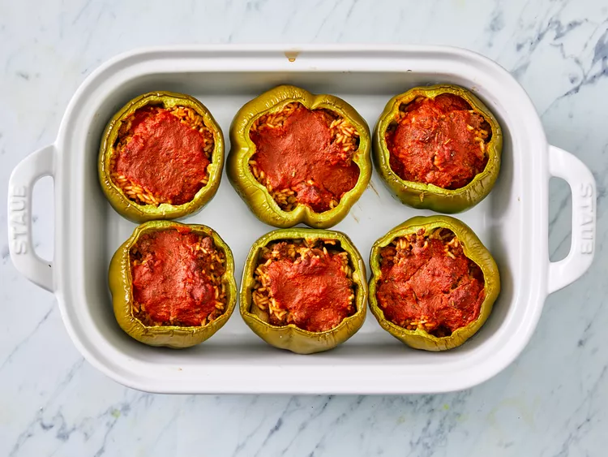

Stuffed Peppers

Description
Stuffed peppers are a tantalizing culinary creation that combines the vibrant beauty of nature's bounty with a symphony of flavors and textures.
These plump, bell-shaped peppers, typically in shades of red, green, or yellow, serve as edible vessels, ready to cradle a delicious and hearty filling.
As they bake to tender perfection, their once-firm flesh transforms into a velvety, melt-in-your-mouth experience.
The filling, often a harmonious blend of ground meats, rice, vegetables, and aromatic herbs and spices, infuses the peppers with a medley of savory, fragrant aromas that dance through the air.
Each bite is a journey through layers of taste, from the slightly sweet and smoky notes of the roasted pepper exterior to the savory, satisfying heartiness of the interior.
Stuffed peppers, with their visual allure and gastronomic allure, are a testament to the artistry of home cooking and the joy of savoring a meal crafted with love and creativity.
Ingredients
- 1 cup cold water
- 1/2 cup uncooked long grain white rice
- 1 tablespoon vegetable oil
- 1 pound ground beef
- 6 medium green bell peppers
- 16 ounces tomato sauce, divided
- 1 tablespoon Worcestershire sauce
- 1/4 teaspoon garlic powder
- 1/4 teaspoon onion powder
- salt and ground black pepper to taste
- 1 teaspoon Italian seasoning
Steps
- Gather all ingredients, and preheat the oven to 350 degrees F (175 degrees C).
- Bring water and rice to a boil in a covered saucepan. Reduce heat to low and simmer until rice is tender, about 20 minutes.
- Meanwhile, heat oil in a skillet over medium heat. Add ground beef and cook until evenly browned and crumbly, 7 to 9 minutes.
- Hollow out bell peppers by removing and discarding the tops, seeds, and membranes. Slice the bottoms of the peppers if necessary to make sure they stand up straight.
- Arrange peppers in a baking dish with the hollowed sides facing upward.
- Prepare filling by mixing cooked beef, cooked rice, 1/2 of the tomato sauce, Worcestershire sauce, garlic powder, onion powder, salt, and pepper. Spoon an equal amount of filling into each hollowed pepper.
- Mix remaining tomato sauce and Italian seasoning in a bowl, and pour over the stuffed peppers.
- Bake in the preheated oven, basting with sauce every 15 minutes, until peppers are tender, about 1 hour.
- Serve hot and enjoy!